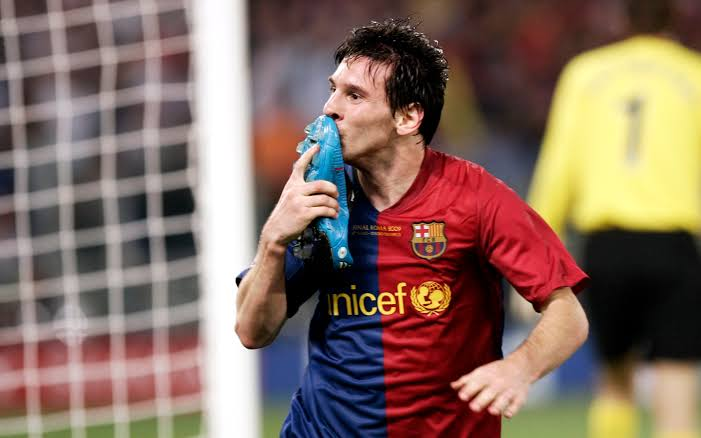
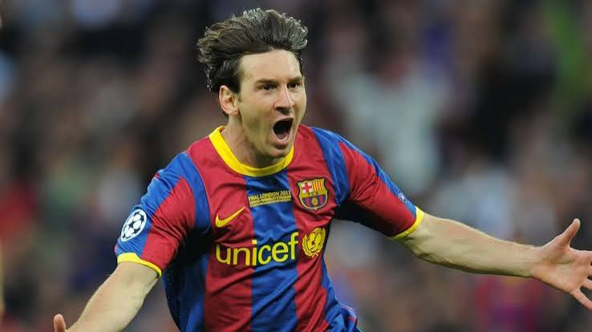

Barcelona · La Liga & Champions League
The Treble Season
Under Pep Guardiola, Messi anchored a Barcelona side that swept every major trophy in sight — the season that announced his arrival among the game's greats.
The magic of number 10
An interactive tribute. Wherever your cursor goes, he's watching.
Section 01
The nights that defined an era.

Barcelona · La Liga & Champions League
Under Pep Guardiola, Messi anchored a Barcelona side that swept every major trophy in sight — the season that announced his arrival among the game's greats.

Champions League Final · Wembley
A dominant European final performance against Manchester United, with Messi at the heart of Barcelona's football at its most complete.
Barcelona · MSN Era
Alongside Suárez and Neymar, Messi drove Barcelona to a second treble-winning campaign, cementing one of football's most feared attacking trios.
Copa América · Maracanã
A long-awaited major trophy with the national team, lifted on Brazilian soil — the turning point of his international story.
FIFA World Cup · Qatar
A tournament-long masterclass through the knockout rounds, earning the Golden Ball as the competition's outstanding player.
World Cup Final · Lusail
A final for the ages against France, decided on penalties — the trophy that completed a career and a nation's 36-year wait.
Section 02
Two decades at the top of the game, told in titles.
The most of any player in the award's history.
Argentina, 2022 — the trophy that closed the debate.
Continental champion with Argentina in 2021 and 2024.
Four European titles across two Barcelona treble-winning sides.
A decade of domestic dominance with FC Barcelona.
Won with Barcelona in 2009, 2011 and 2015.
Beijing, 2008 — champion with Argentina's Olympic team.
Section 03
Bring your own memories. Your video stays in your browser — nothing is uploaded anywhere.
Or choose a file from your device — MP4, MOV, WebM.
Section 04
Some players play the game. Some players change it forever.